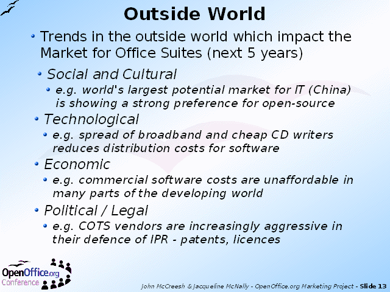

Notes:
A Strategic Plan also has to look to the future - say for the next five years. To give shape to these forecasts, the Strategic Marketing Plan adopted the well-known STEP factors model (sometimes also called PEST).
It is important to note that each one of these factors could be either a threat or an opportunity for OpenOffice.org.
Some factors could be both - for example, the aggressive pursuit of IPR (Intellectual Property Rights) by COTS (Commercial Off The Shelf) vendors could be:
opportunity - people with unlicensed software could be tempted to migrate to open-source
threat - people could be unwilling to move to open-source in case they fall foul of patent claims in the future